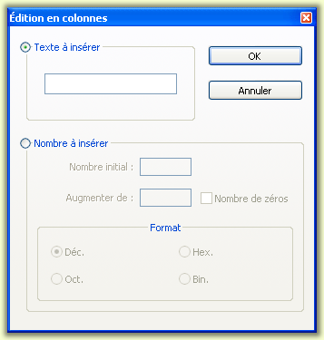

| Précédent: Saisie semi-automatique | Edition | Suivant: Commentaires |
Une autre façon d'éditer un fichier est de l'éditer en mode colonne. Cela signifie que le texte peut être sélectionné par colonnes, plutôt que par lignes (« édition verticale »). Le support de l'édition en colonne se fait via Scintilla, mais avec quelques suppléments de Notepad++. Pour lancer le mode colonne pour la sélection, appuyez sur la touche Alt (par défaut) lors de la sélection de texte (en utilisant les touches de navigation ou la souris), en déplaçant le curseur vers le bas ou vers le haut selon les besoins. Cela fonctionne mieux si une police non-proportionnelle (exemple : Courrier New) est utilisée, car chaque caractère sera visuellement aligné sur celui de la même colonne au dessus et en dessous (voir Configurateur de coloration Syntaxique pour plus d'informations).
Lorsque le texte est sélectionné dans ce mode appelé rectangulaire, la saisie au clavier changera chaque colonne de caractères sélectionné, y insérant le caractère saisi, ou bien insérera une nouvelle colonne. Utilisez la touche ESC pour sortir de ce mode de saisie spécial. Pour reculer d'une colonne, utilisez les fonction , et non la touche Retour arrière.
| Avant de taper "faire" | Après avoir tapé "faire" |
|
|
La commande affiche un message pour rappeler l'existence de ce mode et les raccourcis clavier par défaut. De fait, ils n'apparaissent dans aucun autre menu.
La boîte de dialogue Editeur de colonne est conçue pour rendre le travail plus facile avec des colonnes. Il peut être ouvert en sélectionnant
